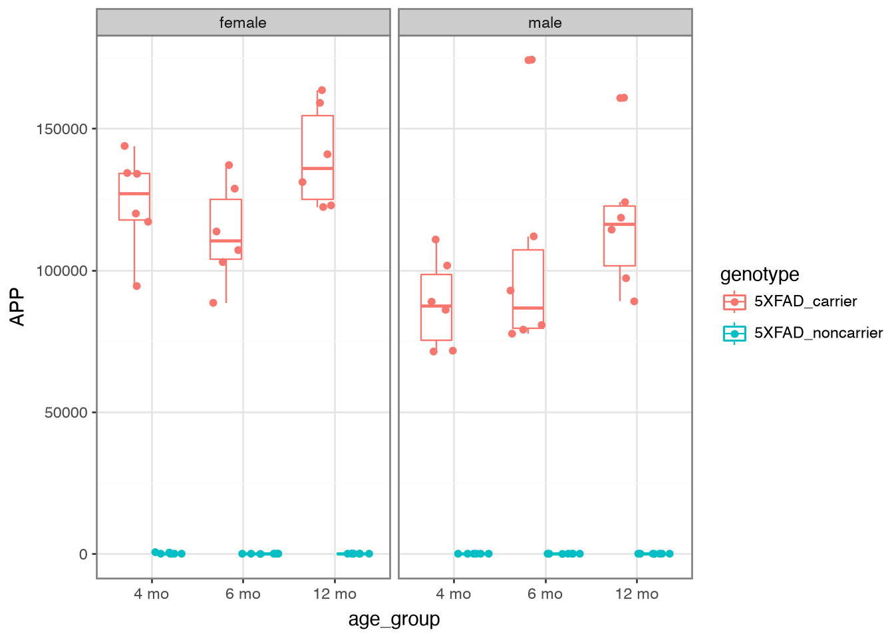
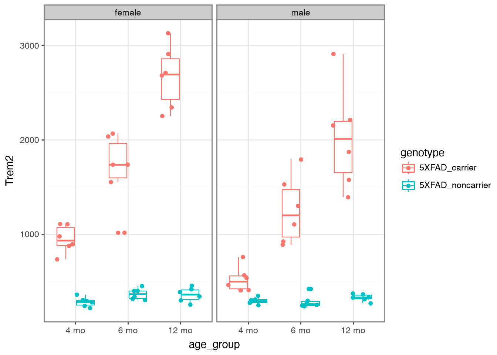
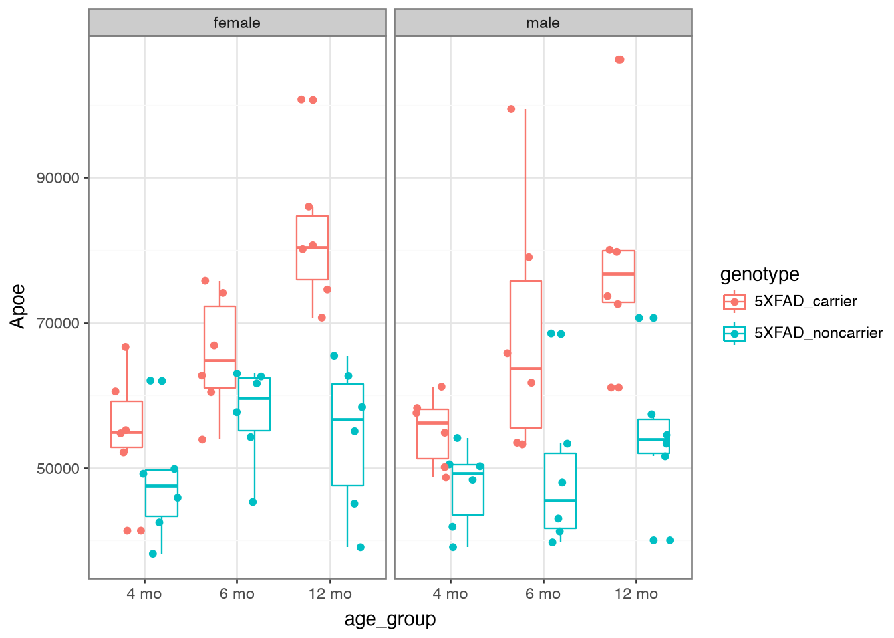

import synapseclient
import pandas as pd
pd.set_option('display.max_columns', 20)
# Create Synapse object
syn = synapseclient.Synapse()AD Knowledge Portal Workshop: Download and explore 5XFAD mouse data in Python
Overview
We will be working with metadata and RNAseq counts data from The Jax.IU.Pitt_5XFAD Study (Jax.IU.Pitt_5XFAD), which can be found here on the AD Knowledge Portal. During this workshop we will use Python to:
Log in to Synapse
Download the counts file (single-file download from Synapse)
Download the metadata files (bulk data download from Synapse)
Map samples in data files to information in metadata files
Explore the data
Setup
Install synapseclient package
If you haven’t already, install synapseclient (the Synapse python client package) using pip from the command line. Your Python version should be any version from 3.10 through 3.14.
pip install --upgrade synapseclientWe will also use the python package pandas for data wrangling, and plotnine, which is Python’s port of the ggplot2 library. If you don’t have these installed, install from the command line:
pip install pandas plotnineImport the synapseclient and pandas libraries and create a Synapse object.
Login to Synapse
Next, you will need to log in to your Synapse account.
Login option 1: Synapseclient takes credentials from your Synapse web session
If you are logged into the Synapse web browser, synapseclient will automatically use your login credentials to log you in during your Python session! All you have to do is call syn.login() from a script or the Python console.
syn.login()Login option 2: Synapse PAT
If you have never used synapseclient (or synapser) before, follow these instructions to generate a personal access token, then paste the PAT into the code below. Make sure you scope your access token to allow you to View, Download, and Modify.
⚠ DO NOT put your Synapse access token in scripts that will be shared with others, or they will be able to log in as you.
syn.login(authToken="<paste your personal access token here>")For more information on managing Synapse credentials with synapseclient, see the documentation here.
Download data
While you can always download data from the AD Portal website via your web browser, it’s usually faster and often more convenient to download data programmatically.
Download a single file
To download a single file from the AD Knowledge Portal, copy its Synapse ID from the search results in the portal or go directly to the file’s page in Synapse to find its ID. Then use the get() function from synapseclient to download the file.
Exercise 1: Use Explore Data to find processed RNAseq data from the Jax.IU.Pitt_5XFAD Study
This exercise filters the table to four files. We will download rnaseq_rsem.merged.gene_counts.tsv. The Synapse ID for this file is in the “Id” column.

We can then use that synID to download the file. Some information about the file and its storage location within Synapse is assigned to the variable counts_file.
counts_id = "syn63855360"
counts_file = syn.get(
counts_id,
downloadLocation="files/",
ifcollision="overwrite.local"
)The ifcollision="overwrite.local" argument overwrites any local copies with the same name/path on your computer, avoiding multiple copies piling up. The client checks the local file against the Synapse version and downloads it only when needed.
This is very useful for large files especially: you can ensure that you always have the latest copy of a file from Synapse, without having to re-download the file if you already have the current version on your hard drive.
The variable counts_file is a Synapse File entity object. Its attributes include .path, .annotations, and .version_number, which contain information about where the file is in Synapse, how it is labeled, what version it is, etc.
Some info on the file from Synapse:
counts_file.id'syn63855360'counts_file.path'/Users/jbeck/Code/ADPortalWorkshops/files/rnaseq_rsem.merged.gene_counts.tsv'counts_file.versionNumber1Let’s take a quick look at the file we just downloaded.
counts = pd.read_table(counts_file.path, sep = "\t")
counts.head()| gene_id | transcript_id(s) | 32043 | 32044 | 32046 | 32047 | 32048 | 32049 | 32050 | 32052 | ... | 46887 | 46888 | 46889 | 46890 | 46891 | 46892 | 46893 | 46895 | 46896 | 46897 | |
|---|---|---|---|---|---|---|---|---|---|---|---|---|---|---|---|---|---|---|---|---|---|
| 0 | ENSG00000080815 | ENST00000324501,ENST00000357710,ENST0000039415... | 9542.0 | 0.0 | 0.0 | 0.0 | 7048.0 | 0.0 | 0.0 | 8163.0 | ... | 6634.0 | 0.0 | 7064.0 | 5616.00 | 0.0 | 10582.00 | 40.0 | 0.0 | 6762.00 | 0.0 |
| 1 | ENSG00000142192 | ENST00000346798,ENST00000348990,ENST0000035419... | 163496.0 | 0.0 | 0.0 | 0.0 | 122863.0 | 1.0 | 2.0 | 159010.0 | ... | 119978.0 | 0.0 | 111936.0 | 92819.54 | 0.0 | 174247.58 | 533.0 | 0.0 | 110808.12 | 3.0 |
| 2 | ENSMUSG00000000001 | ENSMUST00000000001 | 2463.0 | 1698.0 | 1931.0 | 1504.0 | 1331.0 | 1481.0 | 1325.0 | 1619.0 | ... | 1809.0 | 1873.0 | 2020.0 | 1962.00 | 1480.0 | 2912.00 | 1699.0 | 2054.0 | 1901.00 | 1684.0 |
| 3 | ENSMUSG00000000003 | ENSMUST00000000003,ENSMUST00000114041 | 0.0 | 0.0 | 0.0 | 0.0 | 0.0 | 0.0 | 0.0 | 0.0 | ... | 0.0 | 0.0 | 0.0 | 0.00 | 0.0 | 0.00 | 0.0 | 0.0 | 0.00 | 0.0 |
| 4 | ENSMUSG00000000028 | ENSMUST00000000028,ENSMUST00000096990,ENSMUST0... | 86.0 | 76.0 | 62.0 | 59.0 | 50.0 | 70.0 | 76.0 | 59.0 | ... | 61.0 | 94.0 | 66.0 | 80.00 | 46.0 | 118.00 | 80.0 | 81.0 | 84.00 | 44.0 |
5 rows × 74 columns
Bulk download files
Exercise 2: Use Explore Data to find all metadata files from the Jax.IU.Pitt_5XFAD study
Use the facets and search bar to look for data you want to download from the AD Knowledge Portal. Once you’ve identified the files you want, click on the download arrow icon on the top right of the Explore Data table and select “Programmatic Options” from the drop-down menu.

In the window that pops up, select the “Python” tab from the top menu bar. This will display some Python code that constructs a SQL query of the Synapse data table that drives the AD Knowledge Portal. This query will allow us to download only the files that meet our search criteria.

We’ll download our files using two steps:
We will use the
tableQuery()code the portal gave us to download a CSV file that lists all of the files we want. This CSV file is a table, one row per file in the list, containing the Synapse ID, file name, annotations, etc associated with each file.- This does NOT download the files themselves. It only fetches a list of the files plus their annotations for you.
We will call
get()on each Synapse ID in the table to download the files.
Why isn’t this just one step instead of two?
Splitting this into steps can be extremely helpful for cases where you might not want to download all of the files back-to-back. For example, if the file sizes are very large or if you are downloading hundreds of files. Downloading the table first lets you: a) Fetch helpful annotations about the files without downloading them first, and b) do things like loop through the list one by one, download a file, do some processing, and delete the file before downloading the next one to save hard drive space.
Back to downloading…
The function tableQuery() returns an object with information about the downloaded results file. If no downloadLocation is specified, the file is automatically downloaded to a folder called .synapseCache in your home directory.
# download the results of the filtered table query
query_string = (
"SELECT * FROM syn11346063.88 WHERE ( ( \"resourceType\" = 'metadata' ) " +
"AND ( \"study\" HAS ( 'Jax.IU.Pitt_5XFAD' ) ) )"
)
results = syn.tableQuery(
query_string,
includeRowIdAndRowVersion = False,
downloadLocation="files/"
)# view the file path of the resulting csv
results.filepath'/Users/jbeck/Code/ADPortalWorkshops/files/SYNAPSE_TABLE_QUERY_178056549.csv'We can directly convert results into a pandas DataFrame to work with it. Exploring the table, we and see that it contains information on all of the AD Portal data files we want to download. Some columns like the “id” and “parentId” columns contain info about where the file is in Synapse, and some columns contain AD Portal annotations for each file, like “dataType”, “specimenID”, and “assay”. This annotation table will later allow us to link downloaded files to additional metadata variables!
# read in the table query csv file
download_table = results.asDataFrame()
download_table| id | name | study | dataType | assay | organ | tissue | species | sex | consortium | ... | projectId | modifiedOn | modifiedBy | dataFileHandleId | metaboliteType | chromosome | modelSystemType | libraryPrep | dataFileSizeBytes | dataContributionGroup | |
|---|---|---|---|---|---|---|---|---|---|---|---|---|---|---|---|---|---|---|---|---|---|
| 0 | syn63084319 | individual_animal_metadata_Jax.IU.Pitt_5XFAD.csv | [Jax.IU.Pitt_5XFAD] | [] | [] | NaN | [] | [Mouse] | [] | MODEL-AD | ... | syn2580853 | 1753212867841 | 3446625 | 149287644 | [] | NaN | animal | NaN | 112666 | [] |
| 1 | syn63090748 | assay_RNAseq_Jax.IU.Pitt_5XFAD.csv | [Jax.IU.Pitt_5XFAD] | [geneExpression] | [rnaSeq] | NaN | [] | [Mouse] | [] | MODEL-AD | ... | syn2580853 | 1753212868022 | 3446625 | 149286679 | [] | NaN | animal | NaN | 11755 | [] |
| 2 | syn63587028 | biospecimen_metadata_Jax.IU.Pitt_5XFAD.csv | [Jax.IU.Pitt_5XFAD] | [] | [] | NaN | [] | [Mouse] | [] | MODEL-AD | ... | syn2580853 | 1753212868108 | 3446625 | 149286518 | [] | NaN | animal | NaN | 118146 | [] |
| 3 | syn64153114 | assay_PET_Jax.IU.Pitt_5XFAD.csv | [Jax.IU.Pitt_5XFAD] | [image] | [Positron Emission Tomography] | NaN | [] | [Mouse] | [] | MODEL-AD | ... | syn2580853 | 1753212868207 | 3446625 | 150192583 | [] | NaN | animal | NaN | 25962 | [] |
| 4 | syn64153269 | assay_autorad_Jax.IU.Pitt_5XFAD.csv | [Jax.IU.Pitt_5XFAD] | [image] | [autoradiography] | NaN | [] | [Mouse] | [] | MODEL-AD | ... | syn2580853 | 1753212868297 | 3446625 | 150192591 | [] | NaN | animal | NaN | 29891 | [] |
| 5 | syn64153619 | assay_immunoassay_Jax.IU.Pitt_5XFAD.csv | [Jax.IU.Pitt_5XFAD] | [Immunoassay] | [electrochemiluminescence] | NaN | [] | [Mouse] | [] | MODEL-AD | ... | syn2580853 | 1753212868389 | 3446625 | 150192605 | [] | NaN | animal | NaN | 18661 | [] |
6 rows × 44 columns
Let’s look at a subset of columns that might be useful:
download_table[["id", "name", "metadataType", "assay", "fileFormat", "currentVersion"]]| id | name | metadataType | assay | fileFormat | currentVersion | |
|---|---|---|---|---|---|---|
| 0 | syn63084319 | individual_animal_metadata_Jax.IU.Pitt_5XFAD.csv | individual | [] | csv | 6 |
| 1 | syn63090748 | assay_RNAseq_Jax.IU.Pitt_5XFAD.csv | assay metadata | [rnaSeq] | csv | 3 |
| 2 | syn63587028 | biospecimen_metadata_Jax.IU.Pitt_5XFAD.csv | biospecimen | [] | csv | 5 |
| 3 | syn64153114 | assay_PET_Jax.IU.Pitt_5XFAD.csv | assay metadata | [Positron Emission Tomography] | csv | 3 |
| 4 | syn64153269 | assay_autorad_Jax.IU.Pitt_5XFAD.csv | assay metadata | [autoradiography] | csv | 4 |
| 5 | syn64153619 | assay_immunoassay_Jax.IU.Pitt_5XFAD.csv | assay metadata | [electrochemiluminescence] | csv | 2 |
Tip: Rename and save this file somewhere memorable to have a complete record of all the files you are using and what version of each file was downloaded – for reproducibility!
Finally, we can use a for loop to loop through the “id” column and apply the get() function to each file’s synID.
# loop through the column of synIDs and download each file
for id in download_table.id:
syn.get(id, downloadLocation="files/", ifcollision="overwrite.local")Congratulations, you have bulk downloaded files from the AD Knowledge Portal!
✏ Note on file versions
All files in the AD Portal are versioned, meaning that if the file represented by a particular synID changes, a new version will be created. To download a specific version, set the version argument in syn.get(). More info on version control in the AD Portal and the Synapse platform can be found here.
Single-specimen files
For files that contain data from a single specimen (e.g. raw sequencing files, raw mass spectra, etc.), we can use the Synapse annotations to associate these files with the appropriate metadata.
Excercise 3: Use Explore Data to find all RNAseq files from the Jax.IU.Pitt_5XFAD study.
If we filter for data where Study = “Jax.IU.Pitt_5XFAD” and Assay = “rnaSeq” we will get a list of 149 files, including raw fastqs and processed counts data.
Synapse entity annotations
We can use the function get_annotations() to view the annotations associated with any file before actually downloading the file.
# the synID of a random fastq file from our filtered search of fastq files
fastq_id = "syn22108503"
anno = syn.get_annotations(fastq_id)# "anno" is a dict
anno{'sex': ['female'],
'assay': ['rnaSeq'],
'grant': ['U54AG054345'],
'organ': ['brain'],
'study': ['Jax.IU.Pitt_5XFAD'],
'tissue': ['right cerebral hemisphere'],
'bedding': ['aspen'],
'climbID': [298456],
'species': ['Mouse'],
'waterpH': [2.85],
'ageDeath': [11.0],
'dataType': ['geneExpression'],
'genotype': ['5XFAD_carrier'],
'dateBirth': [datetime.datetime(2018, 3, 19, 4, 0, tzinfo=datetime.timezone.utc)],
'consortium': ['MODEL-AD'],
'fileFormat': ['fastq'],
'generation': ['f3'],
'rodentDiet': ['6% Standard'],
'specimenID': ['GT19_12829'],
'brainWeight': ['unknown'],
'dataSubtype': ['raw'],
'libraryPrep': ['polyAselection'],
'samplingAge': [11.0],
'stockNumber': ['JR_008730'],
'individualID': [32043],
'officialName': ['B6.Cg-Tg(APPSwFlLon,PSEN1*M146L*L286V)6799Vas/Mmjax'],
'resourceType': ['experimentalData'],
'sampleStatus': ['unavailable'],
'ageDeathUnits': ['months'],
'isModelSystem': ['FALSE'],
'materialOrigin': ['individualIdSource'],
'isMultiSpecimen': ['FALSE'],
'modelSystemName': ['5XFAD'],
'modelSystemType': ['animal'],
'samplingAgeUnits': ['months'],
'genotypeBackground': ['C57BL/6J'],
'individualIdSource': ['JAX'],
'strainOfficialName': ['5xFAD']}# Access specific fields from the dict:
anno['individualID'][32043]anno['specimenID']['GT19_12829']The file annotations let us see which study the file is associated with (Jax.IU.Pitt.5XFAD), which species it’s from (Mouse), which assay generated the file (rnaSeq), and a whole bunch of other properties. Most importantly, single-specimen files are annotated with with the specimenID of the specimen in the file, and the individualID of the individual that specimen was taken from. We can use these annotations to link files to the rest of the metadata, including metadata that is not in annotations. This is especially helpful for human studies, as potentially identifying information like age, race, and diagnosis is not included in file annotations.
# This file was downloaded in Exercise 2 along with all the other metadata files
# for this study
ind_meta = pd.read_csv("files/individual_animal_metadata_Jax.IU.Pitt_5XFAD.csv")
# Find records belonging to the individual this file maps to the individual
# metadata. anno["individualID"] is a list of length 1.
ind_meta[ind_meta["individualID"] == anno["individualID"][0]]| Component | individualID | climbID | microchipID | birthID | matingID | individualIdSource | materialOrigin | sex | species | ... | room | waterpH | treatmentDose | treatmentType | stockNumber | genotype | genotypeBackground | modelSystemName | strainOfficialName | officialName | |
|---|---|---|---|---|---|---|---|---|---|---|---|---|---|---|---|---|---|---|---|---|---|
| 268 | NaN | 32043 | 298456 | NaN | NaN | NaN | JAX | individualIdSource | female | Mouse | ... | NaN | 2.85 | NaN | NaN | JR_008730 | 5XFAD_carrier | C57BL/6J | 5XFAD | 5xFAD | B6.Cg-Tg(APPSwFlLon,PSEN1*M146L*L286V)6799Vas/... |
1 rows × 28 columns
⚠ Caution: In this study, the individualIDs are numbers, and may be treated differently by get() and pandas. Always check that the fields are the same type before comparison.
Annotations during bulk download
When bulk downloading many files, the best practice is to preserve the download manifest that is generated which lists all the files, their synIDs, and all their annotations.
If we use the “Programmatic Options” tab in the AD Portal download menu to download all 149 rnaSeq files from the 5XFAD study, we would get a table query that looks like this:
query_string = (
"SELECT * FROM syn11346063.88 WHERE ( ( \"assay\" HAS ( 'rnaSeq' ) ) AND " +
"( \"study\" HAS ( 'Jax.IU.Pitt_5XFAD' ) ) )"
)
results = syn.tableQuery(
query_string,
includeRowIdAndRowVersion = False,
downloadLocation="files/"
)As before, this downloads a csv file with the results of our AD Portal query. We can see which specimens are associated with which files:
annotations_table = results.asDataFrame()
annotations_table[["id", "name", "individualID", "specimenID"]].head()| id | name | individualID | specimenID | |
|---|---|---|---|---|
| 0 | syn22108503 | 32043_GT19_12829_CCGCGGTT-AGCGCTAG_R1_001.fast... | 32043 | GT19_12829 |
| 1 | syn22108508 | 32044_GT19_12856_GGAGCGTC-GTCCGTGC_R1_001.fast... | 32044 | GT19_12856 |
| 2 | syn22108512 | 32046_GT19_12865_CAACAATG-CTTCACGG_R1_001.fast... | 32046 | GT19_12865 |
| 3 | syn22108519 | 32047_GT19_12836_ATGAGGCC-GTTAATTG_R1_001.fast... | 32047 | GT19_12836 |
| 4 | syn22108525 | 32049_GT19_12881_GCCACAGG-CATGCCAT_R1_001.fast... | 32049 | GT19_12881 |
You could then use a for loop as we did in the Bulk download files example to loop through the column of synIDs and download all 149 files.
Multispecimen files
Multispecimen files in the AD Knowledge Portal are files that contain data or information from more than one specimen. They are not annotated with individualIDs or specimenIDs, since these files may contain numbers of specimens that exceed the annotation limits. These files are usually processed or summary data (gene counts, peptide quantifications, etc), and are always annotated with isMultiSpecimen = True.
If we look at the processed data files in the table of 5XFAD RNAseq file annotations we just downloaded, we will see that isMultiSpecimen = True, but individualID and specimenID are blank:
annotations_table.loc[
annotations_table['fileFormat'] == "tsv",
['name','individualID', 'specimenID', 'isMultiSpecimen']
]| name | individualID | specimenID | isMultiSpecimen | |
|---|---|---|---|---|
| 148 | rnaseq_rsem.merged.transcript_counts.tsv | NaN | NaN | True |
| 149 | rnaseq_rsem.merged.transcript_tpm.tsv | NaN | NaN | True |
| 150 | rnaseq_rsem.merged.gene_counts.tsv | NaN | NaN | True |
| 151 | rnaseq_rsem.merged.gene_tpm.tsv | NaN | NaN | True |
The multispecimen file should contain a row or column of specimenIDs that correspond to the specimenIDs used in a study’s metadata. Note: this study uses individualIDs instead, which is unusual. Most studies use specimenID for column names in data like this.
counts.columns[range(20)].tolist()['gene_id',
'transcript_id(s)',
'32043',
'32044',
'32046',
'32047',
'32048',
'32049',
'32050',
'32052',
'32053',
'32057',
'32059',
'32061',
'32062',
'32065',
'32067',
'32068',
'32070',
'32073']Working with AD Portal metadata
Metadata basics
We have now downloaded several metadata files and an RNAseq counts file from the portal. For our next exercises, we want to read those files in as pandas data so we can work with them.
We can see from the download_table we got during the bulk download step that we have six metadata files. Two of these should be the individual and biospecimen files, and four of them are assay metadata files.
download_table[['name', 'metadataType', 'assay']]| name | metadataType | assay | |
|---|---|---|---|
| 0 | individual_animal_metadata_Jax.IU.Pitt_5XFAD.csv | individual | [] |
| 1 | assay_RNAseq_Jax.IU.Pitt_5XFAD.csv | assay metadata | [rnaSeq] |
| 2 | biospecimen_metadata_Jax.IU.Pitt_5XFAD.csv | biospecimen | [] |
| 3 | assay_PET_Jax.IU.Pitt_5XFAD.csv | assay metadata | [Positron Emission Tomography] |
| 4 | assay_autorad_Jax.IU.Pitt_5XFAD.csv | assay metadata | [autoradiography] |
| 5 | assay_immunoassay_Jax.IU.Pitt_5XFAD.csv | assay metadata | [electrochemiluminescence] |
We are only interested in RNAseq data, so we will only read in the individual, biospecimen, and RNAseq assay metadata files. If you already know the filenames, you could hard-code them, but it’s good practice to find the path programmatically from the table instead of a hard-coded filename to avoid accidentally reading the wrong file. This is demonstrated here:
# Find the rows in the table that correspond to the metadata we want
ind_file = download_table.loc[download_table["metadataType"] == "individual"]
bio_file = download_table.loc[download_table["metadataType"] == "biospecimen"]
# the "assay" column contains one-item lists so we have to compare against
# [["rnaSeq"]] instead of "rnaSeq"
assay_file = download_table.loc[
(download_table["metadataType"] == "assay metadata") &
(download_table["assay"].isin([["rnaSeq"]]))
]
# Read each file -- force individualID to be read as a string
ind_meta = pd.read_csv(f"files/{ind_file['name'].iloc[0]}", dtype={"individualID": str})
bio_meta = pd.read_csv(f"files/{bio_file['name'].iloc[0]}", dtype={"individualID": str})
rna_meta = pd.read_csv(f"files/{assay_file['name'].iloc[0]}")Verify file contents
At this point we have downloaded and read in the counts file and 3 metadata files into the variables counts, ind_meta, bio_meta, and rna_meta.
Let’s examine the data and metadata files a bit before we begin our analyses.
Counts data
counts.head()| gene_id | transcript_id(s) | 32043 | 32044 | 32046 | 32047 | 32048 | 32049 | 32050 | 32052 | ... | 46887 | 46888 | 46889 | 46890 | 46891 | 46892 | 46893 | 46895 | 46896 | 46897 | |
|---|---|---|---|---|---|---|---|---|---|---|---|---|---|---|---|---|---|---|---|---|---|
| 0 | ENSG00000080815 | ENST00000324501,ENST00000357710,ENST0000039415... | 9542.0 | 0.0 | 0.0 | 0.0 | 7048.0 | 0.0 | 0.0 | 8163.0 | ... | 6634.0 | 0.0 | 7064.0 | 5616.00 | 0.0 | 10582.00 | 40.0 | 0.0 | 6762.00 | 0.0 |
| 1 | ENSG00000142192 | ENST00000346798,ENST00000348990,ENST0000035419... | 163496.0 | 0.0 | 0.0 | 0.0 | 122863.0 | 1.0 | 2.0 | 159010.0 | ... | 119978.0 | 0.0 | 111936.0 | 92819.54 | 0.0 | 174247.58 | 533.0 | 0.0 | 110808.12 | 3.0 |
| 2 | ENSMUSG00000000001 | ENSMUST00000000001 | 2463.0 | 1698.0 | 1931.0 | 1504.0 | 1331.0 | 1481.0 | 1325.0 | 1619.0 | ... | 1809.0 | 1873.0 | 2020.0 | 1962.00 | 1480.0 | 2912.00 | 1699.0 | 2054.0 | 1901.00 | 1684.0 |
| 3 | ENSMUSG00000000003 | ENSMUST00000000003,ENSMUST00000114041 | 0.0 | 0.0 | 0.0 | 0.0 | 0.0 | 0.0 | 0.0 | 0.0 | ... | 0.0 | 0.0 | 0.0 | 0.00 | 0.0 | 0.00 | 0.0 | 0.0 | 0.00 | 0.0 |
| 4 | ENSMUSG00000000028 | ENSMUST00000000028,ENSMUST00000096990,ENSMUST0... | 86.0 | 76.0 | 62.0 | 59.0 | 50.0 | 70.0 | 76.0 | 59.0 | ... | 61.0 | 94.0 | 66.0 | 80.00 | 46.0 | 118.00 | 80.0 | 81.0 | 84.00 | 44.0 |
5 rows × 74 columns
The counts data file has a column of Ensembl gene IDs, a column of transcript IDs (not shown above), and the rest of the columns are count data, where the column headers correspond to the individualID of the sample.
Remember, typically for studies these column headers would be specimenIDs instead, which should all match what is in the RNAseq assay metadata file.
rna_meta.head()| specimenID | sequencingBatch | totalReads | assay | Component | libraryID | platform | RIN | referenceSet | rnaBatch | libraryBatch | libraryPrep | libraryPreparationMethod | libraryVersion | isStranded | readStrandOrigin | readLength | runType | validBarcodeReads | DV200 | |
|---|---|---|---|---|---|---|---|---|---|---|---|---|---|---|---|---|---|---|---|---|
| 0 | GT19_12829 | 19-model-ad-007 | 43,851,350 | rnaSeq | NaN | NaN | IlluminaNovaseq6000 | NaN | NaN | NaN | NaN | polyAselection | KAPA mRNA HyperPrep Kit | NaN | True | reverse | 150 | pairedEnd | NaN | NaN |
| 1 | GT19_12856 | 19-model-ad-007 | 32,659,722 | rnaSeq | NaN | NaN | IlluminaNovaseq6000 | NaN | NaN | NaN | NaN | polyAselection | KAPA mRNA HyperPrep Kit | NaN | True | reverse | 150 | pairedEnd | NaN | NaN |
| 2 | GT19_12865 | 19-model-ad-007 | 33,143,589 | rnaSeq | NaN | NaN | IlluminaNovaseq6000 | NaN | NaN | NaN | NaN | polyAselection | KAPA mRNA HyperPrep Kit | NaN | True | reverse | 150 | pairedEnd | NaN | NaN |
| 3 | GT19_12836 | 19-model-ad-007 | 26,335,890 | rnaSeq | NaN | NaN | IlluminaNovaseq6000 | NaN | NaN | NaN | NaN | polyAselection | KAPA mRNA HyperPrep Kit | NaN | True | reverse | 150 | pairedEnd | NaN | NaN |
| 4 | GT19_12850 | 19-model-ad-007 | 26,276,039 | rnaSeq | NaN | NaN | IlluminaNovaseq6000 | NaN | NaN | NaN | NaN | polyAselection | KAPA mRNA HyperPrep Kit | NaN | True | reverse | 150 | pairedEnd | NaN | NaN |
Are all the column headers from the counts matrix (except the first two columns) in the assay metadata?
all(counts.columns[2:].isin(rna_meta["specimenID"]))FalseNo, because these are individualIDs, which are in the individual metadata file:
all(counts.columns[2:].isin(ind_meta["individualID"]))TrueAssay metadata
The assay metadata contains information about how data was generated on each sample in the assay. Each specimenID represents a unique sample.
How many unique specimens were sequenced?
rna_meta['specimenID'].nunique()72Were the samples all sequenced on the same platform and in the same batch?
rna_meta[['platform', 'sequencingBatch']].drop_duplicates()| platform | sequencingBatch | |
|---|---|---|
| 0 | IlluminaNovaseq6000 | 19-model-ad-007 |
Biospecimen metadata
The biospecimen metadata contains specimen-level information, including organ and tissue the specimen was taken from, how it was prepared, etc. Each specimenID is mapped to an individualID.
bio_meta.head()| Component | individualID | specimenID | specimenIdSource | organ | tissue | isPostMortem | BrodmannArea | nucleicAcidSource | cellType | samplingAge | samplingAgeUnits | sampleStatus | fastingState | visitNumber | assay | treatmentType | treatmentDose | |
|---|---|---|---|---|---|---|---|---|---|---|---|---|---|---|---|---|---|---|
| 0 | NaN | 288809984 | rad-288809984-42 | NaN | NaN | NaN | NaN | NaN | NaN | NaN | 8.1 | months | unavailable | NaN | NaN | autoradiography | NaN | NaN |
| 1 | NaN | 288809984 | pet-288809984-42 | NaN | NaN | NaN | NaN | NaN | NaN | NaN | 8.1 | months | unavailable | NaN | NaN | Positron Emission Tomography | NaN | NaN |
| 2 | NaN | 288802181 | rad-288802181-41 | NaN | NaN | NaN | NaN | NaN | NaN | NaN | 8.1 | months | unavailable | NaN | NaN | autoradiography | NaN | NaN |
| 3 | NaN | 288802181 | pet-288802181-41 | NaN | NaN | NaN | NaN | NaN | NaN | NaN | 8.1 | months | unavailable | NaN | NaN | Positron Emission Tomography | NaN | NaN |
| 4 | NaN | 288810806 | rad-288810806-39 | NaN | NaN | NaN | NaN | NaN | NaN | NaN | 8.1 | months | unavailable | NaN | NaN | autoradiography | NaN | NaN |
All specimens from the RNAseq assay metadata file should be in the biospecimen file…
all(rna_meta['specimenID'].isin(bio_meta['specimenID']))True…But the biospecimen file also contains specimens from different assays.
all(bio_meta['specimenID'].isin(rna_meta['specimenID']))Falsebio_meta["assay"].unique().tolist()['autoradiography',
'Positron Emission Tomography',
'Meso Scale Discovery',
'Blood Chemistry Measurement',
'rnaSeq',
'wheel running',
'spontaneous alternation',
'rotarod performance test',
'open field test',
'frailty assessment']Individual metadata
The individual metadata contains information about all the individuals in the study, represented by unique individualIDs. For humans, this includes information on age, sex, race, diagnosis, etc. For MODEL-AD mouse models, the individual metadata has information on model genotypes, stock numbers, diet, and more.
ind_meta.head()| Component | individualID | climbID | microchipID | birthID | matingID | individualIdSource | materialOrigin | sex | species | ... | room | waterpH | treatmentDose | treatmentType | stockNumber | genotype | genotypeBackground | modelSystemName | strainOfficialName | officialName | |
|---|---|---|---|---|---|---|---|---|---|---|---|---|---|---|---|---|---|---|---|---|---|
| 0 | NaN | 288809984 | 263659 | NaN | NaN | NaN | IU | individualIdSource | male | Mouse | ... | NaN | 2.85 | NaN | NaN | JR_008730 | 5XFAD_noncarrier | C57BL/6J | 5XFAD | 5xFAD | B6.Cg-Tg(APPSwFlLon,PSEN1*M146L*L286V)6799Vas/... |
| 1 | NaN | 288802181 | 263660 | NaN | NaN | NaN | IU | individualIdSource | male | Mouse | ... | NaN | 2.85 | NaN | NaN | JR_008730 | 5XFAD_carrier | C57BL/6J | 5XFAD | 5xFAD | B6.Cg-Tg(APPSwFlLon,PSEN1*M146L*L286V)6799Vas/... |
| 2 | NaN | 288810806 | 263661 | NaN | NaN | NaN | IU | individualIdSource | male | Mouse | ... | NaN | 2.85 | NaN | NaN | JR_008730 | 5XFAD_noncarrier | C57BL/6J | 5XFAD | 5xFAD | B6.Cg-Tg(APPSwFlLon,PSEN1*M146L*L286V)6799Vas/... |
| 3 | NaN | 289711434 | 263662 | NaN | NaN | NaN | IU | individualIdSource | male | Mouse | ... | NaN | 2.85 | NaN | NaN | JR_008730 | 5XFAD_carrier | C57BL/6J | 5XFAD | 5xFAD | B6.Cg-Tg(APPSwFlLon,PSEN1*M146L*L286V)6799Vas/... |
| 4 | NaN | 289588716 | 263663 | NaN | NaN | NaN | IU | individualIdSource | male | Mouse | ... | NaN | 2.85 | NaN | NaN | JR_008730 | 5XFAD_noncarrier | C57BL/6J | 5XFAD | 5xFAD | B6.Cg-Tg(APPSwFlLon,PSEN1*M146L*L286V)6799Vas/... |
5 rows × 28 columns
All individualIDs in the biospecimen file should be in the individual file.
all(bio_meta['individualID'].isin(ind_meta['individualID']))TrueWhich model genotypes are in this study?
ind_meta['genotype'].unique().tolist()['5XFAD_noncarrier', '5XFAD_carrier']Joining metadata
We use the three-file structure for our metadata because it allows us to store metadata for each study in a tidy format. Every line in the assay and biospecimen files represents a unique specimen, and every line in the individual file represents a unique individual. This means the files can be easily joined by specimenID and individualID to get all levels of metadata that apply to a particular data file. We will use the merge() function from pandas, with the how = "left" option to specify a left join.
# join all the rows in the assay metadata that have a match in the biospecimen
# metadata, then join all the rows in that dataframe to all rows that have a
# match in the individual metadata
joined_meta = rna_meta.merge(
bio_meta, how = "left", on = "specimenID"
).merge(ind_meta, how = "left", on = "individualID")
joined_meta| specimenID | sequencingBatch | totalReads | assay_x | Component_x | libraryID | platform | RIN | referenceSet | rnaBatch | ... | room | waterpH | treatmentDose_y | treatmentType_y | stockNumber | genotype | genotypeBackground | modelSystemName | strainOfficialName | officialName | |
|---|---|---|---|---|---|---|---|---|---|---|---|---|---|---|---|---|---|---|---|---|---|
| 0 | GT19_12829 | 19-model-ad-007 | 43,851,350 | rnaSeq | NaN | NaN | IlluminaNovaseq6000 | NaN | NaN | NaN | ... | NaN | 2.85 | NaN | NaN | JR_008730 | 5XFAD_carrier | C57BL/6J | 5XFAD | 5xFAD | B6.Cg-Tg(APPSwFlLon,PSEN1*M146L*L286V)6799Vas/... |
| 1 | GT19_12856 | 19-model-ad-007 | 32,659,722 | rnaSeq | NaN | NaN | IlluminaNovaseq6000 | NaN | NaN | NaN | ... | NaN | 2.85 | NaN | NaN | JR_008730 | 5XFAD_noncarrier | C57BL/6J | 5XFAD | 5xFAD | B6.Cg-Tg(APPSwFlLon,PSEN1*M146L*L286V)6799Vas/... |
| 2 | GT19_12865 | 19-model-ad-007 | 33,143,589 | rnaSeq | NaN | NaN | IlluminaNovaseq6000 | NaN | NaN | NaN | ... | NaN | 2.85 | NaN | NaN | JR_008730 | 5XFAD_noncarrier | C57BL/6J | 5XFAD | 5xFAD | B6.Cg-Tg(APPSwFlLon,PSEN1*M146L*L286V)6799Vas/... |
| 3 | GT19_12836 | 19-model-ad-007 | 26,335,890 | rnaSeq | NaN | NaN | IlluminaNovaseq6000 | NaN | NaN | NaN | ... | NaN | 2.85 | NaN | NaN | JR_008730 | 5XFAD_noncarrier | C57BL/6J | 5XFAD | 5xFAD | B6.Cg-Tg(APPSwFlLon,PSEN1*M146L*L286V)6799Vas/... |
| 4 | GT19_12850 | 19-model-ad-007 | 26,276,039 | rnaSeq | NaN | NaN | IlluminaNovaseq6000 | NaN | NaN | NaN | ... | NaN | 2.85 | NaN | NaN | JR_008730 | 5XFAD_carrier | C57BL/6J | 5XFAD | 5xFAD | B6.Cg-Tg(APPSwFlLon,PSEN1*M146L*L286V)6799Vas/... |
| ... | ... | ... | ... | ... | ... | ... | ... | ... | ... | ... | ... | ... | ... | ... | ... | ... | ... | ... | ... | ... | ... |
| 67 | GT19_12847 | 19-model-ad-007 | 51,106,486 | rnaSeq | NaN | NaN | IlluminaNovaseq6000 | NaN | NaN | NaN | ... | NaN | 2.85 | NaN | NaN | JR_008730 | 5XFAD_carrier | C57BL/6J | 5XFAD | 5xFAD | B6.Cg-Tg(APPSwFlLon,PSEN1*M146L*L286V)6799Vas/... |
| 68 | GT19_12887 | 19-model-ad-007 | 31,567,239 | rnaSeq | NaN | NaN | IlluminaNovaseq6000 | NaN | NaN | NaN | ... | NaN | 2.85 | NaN | NaN | JR_008730 | 5XFAD_noncarrier | C57BL/6J | 5XFAD | 5xFAD | B6.Cg-Tg(APPSwFlLon,PSEN1*M146L*L286V)6799Vas/... |
| 69 | GT19_12869 | 19-model-ad-007 | 35,791,982 | rnaSeq | NaN | NaN | IlluminaNovaseq6000 | NaN | NaN | NaN | ... | NaN | 2.85 | NaN | NaN | JR_008730 | 5XFAD_noncarrier | C57BL/6J | 5XFAD | 5xFAD | B6.Cg-Tg(APPSwFlLon,PSEN1*M146L*L286V)6799Vas/... |
| 70 | GT19_12890 | 19-model-ad-007 | 35,577,498 | rnaSeq | NaN | NaN | IlluminaNovaseq6000 | NaN | NaN | NaN | ... | NaN | 2.85 | NaN | NaN | JR_008730 | 5XFAD_carrier | C57BL/6J | 5XFAD | 5xFAD | B6.Cg-Tg(APPSwFlLon,PSEN1*M146L*L286V)6799Vas/... |
| 71 | GT19_12895 | 19-model-ad-007 | 30,739,869 | rnaSeq | NaN | NaN | IlluminaNovaseq6000 | NaN | NaN | NaN | ... | NaN | 2.85 | NaN | NaN | JR_008730 | 5XFAD_noncarrier | C57BL/6J | 5XFAD | 5xFAD | B6.Cg-Tg(APPSwFlLon,PSEN1*M146L*L286V)6799Vas/... |
72 rows × 64 columns
We now have a very wide dataframe that contains all the available metadata on each specimen in the RNAseq data from this study. This procedure can be used to join the three types of metadata files for every study in the AD Knowledge Portal, allowing you to filter individuals and specimens as needed based on your analysis criteria!
RNASeq data exploration
We will use the counts data and metadata to do some basic exploratory analysis of gene expression in the Jax 5XFAD mouse model.
Explore covariates
Which covariates from the metadata are we interested in?
# all samples are from the same organ and tissue, so we can probably discard
# these variables
joined_meta[["organ", "tissue"]].drop_duplicates()| organ | tissue | |
|---|---|---|
| 0 | brain | right cerebral hemisphere |
# we have different sexes and genotypes, so we are probably interested in those
joined_meta[["sex", "genotype"]].drop_duplicates()| sex | genotype | |
|---|---|---|
| 0 | female | 5XFAD_carrier |
| 1 | male | 5XFAD_noncarrier |
| 5 | female | 5XFAD_noncarrier |
| 8 | male | 5XFAD_carrier |
# there are different ages, so we are probably interested in age
joined_meta["ageDeath"].sort_values().unique()array([ 4.3, 4.4, 6.3, 6.4, 6.5, 10.7, 10.9, 11. ])For this example, we will plot gene expression by sex, genotype, and age.
Create age group column
This study has three main age groups, but the ages of the mice are non-integer values. Here we bin the ages into groups where age <= 5: 4 months, > 5 and <= 10: 6 mo, and > 10: 12 months.
joined_meta["age_group"] = pd.cut(
joined_meta["ageDeath"],
bins=[0, 5, 10, 100],
labels=["4 mo", "6 mo", "12 mo"]
)We now have balanced samples across sex, genotype, and age:
joined_meta.groupby(["sex", "genotype", "age_group"])["specimenID"].count()sex genotype age_group
female 5XFAD_carrier 4 mo 6
6 mo 6
12 mo 6
5XFAD_noncarrier 4 mo 6
6 mo 6
12 mo 6
male 5XFAD_carrier 4 mo 6
6 mo 6
12 mo 6
5XFAD_noncarrier 4 mo 6
6 mo 6
12 mo 6
Name: specimenID, dtype: int64Subset covariates
To reduce the width of the dataframe, we will subset only the columns that contain covariates we’re interested in exploring further. Retaining the individualID and specimenID columns will make sure we can map the covariates to the data and back to the original metadata if needed!
covars = joined_meta[["individualID", "specimenID", "sex", "genotype", "age_group"]]
covars.head()| individualID | specimenID | sex | genotype | age_group | |
|---|---|---|---|---|---|
| 0 | 32043 | GT19_12829 | female | 5XFAD_carrier | 12 mo |
| 1 | 32044 | GT19_12856 | male | 5XFAD_noncarrier | 12 mo |
| 2 | 32046 | GT19_12865 | male | 5XFAD_noncarrier | 12 mo |
| 3 | 32047 | GT19_12836 | male | 5XFAD_noncarrier | 12 mo |
| 4 | 32048 | GT19_12850 | female | 5XFAD_carrier | 12 mo |
Convert ensemblIDs to common gene names
Return to the gene counts matrix we read in earlier. 5XFAD mice express human APP and PSEN1, and the counts matrix includes these human genes (recognizable as starting with ENSG instead of ENSMUS):
counts.loc[counts["gene_id"].str.contains("ENSG")]| gene_id | transcript_id(s) | 32043 | 32044 | 32046 | 32047 | 32048 | 32049 | 32050 | 32052 | ... | 46887 | 46888 | 46889 | 46890 | 46891 | 46892 | 46893 | 46895 | 46896 | 46897 | |
|---|---|---|---|---|---|---|---|---|---|---|---|---|---|---|---|---|---|---|---|---|---|
| 0 | ENSG00000080815 | ENST00000324501,ENST00000357710,ENST0000039415... | 9542.0 | 0.0 | 0.0 | 0.0 | 7048.0 | 0.0 | 0.0 | 8163.0 | ... | 6634.0 | 0.0 | 7064.0 | 5616.00 | 0.0 | 10582.00 | 40.0 | 0.0 | 6762.00 | 0.0 |
| 1 | ENSG00000142192 | ENST00000346798,ENST00000348990,ENST0000035419... | 163496.0 | 0.0 | 0.0 | 0.0 | 122863.0 | 1.0 | 2.0 | 159010.0 | ... | 119978.0 | 0.0 | 111936.0 | 92819.54 | 0.0 | 174247.58 | 533.0 | 0.0 | 110808.12 | 3.0 |
2 rows × 74 columns
For display, we want to map all Ensembl IDs to their gene symbols. There are several R and/or Python libraries that will let you query for this information, but for this workshop we will use a pre-made mapping file.
ensembl_to_gene = pd.read_csv("ensembl_translation_key.csv")
named_counts = pd.merge(left = counts, right = ensembl_to_gene,
how = "left", left_on = "gene_id", right_on = "gene_id")
named_counts.head()| gene_id | transcript_id(s) | 32043 | 32044 | 32046 | 32047 | 32048 | 32049 | 32050 | 32052 | ... | 46888 | 46889 | 46890 | 46891 | 46892 | 46893 | 46895 | 46896 | 46897 | gene_name | |
|---|---|---|---|---|---|---|---|---|---|---|---|---|---|---|---|---|---|---|---|---|---|
| 0 | ENSG00000080815 | ENST00000324501,ENST00000357710,ENST0000039415... | 9542.0 | 0.0 | 0.0 | 0.0 | 7048.0 | 0.0 | 0.0 | 8163.0 | ... | 0.0 | 7064.0 | 5616.00 | 0.0 | 10582.00 | 40.0 | 0.0 | 6762.00 | 0.0 | PSEN1 |
| 1 | ENSG00000142192 | ENST00000346798,ENST00000348990,ENST0000035419... | 163496.0 | 0.0 | 0.0 | 0.0 | 122863.0 | 1.0 | 2.0 | 159010.0 | ... | 0.0 | 111936.0 | 92819.54 | 0.0 | 174247.58 | 533.0 | 0.0 | 110808.12 | 3.0 | APP |
| 2 | ENSMUSG00000000001 | ENSMUST00000000001 | 2463.0 | 1698.0 | 1931.0 | 1504.0 | 1331.0 | 1481.0 | 1325.0 | 1619.0 | ... | 1873.0 | 2020.0 | 1962.00 | 1480.0 | 2912.00 | 1699.0 | 2054.0 | 1901.00 | 1684.0 | Gnai3 |
| 3 | ENSMUSG00000000003 | ENSMUST00000000003,ENSMUST00000114041 | 0.0 | 0.0 | 0.0 | 0.0 | 0.0 | 0.0 | 0.0 | 0.0 | ... | 0.0 | 0.0 | 0.00 | 0.0 | 0.00 | 0.0 | 0.0 | 0.00 | 0.0 | Pbsn |
| 4 | ENSMUSG00000000028 | ENSMUST00000000028,ENSMUST00000096990,ENSMUST0... | 86.0 | 76.0 | 62.0 | 59.0 | 50.0 | 70.0 | 76.0 | 59.0 | ... | 94.0 | 66.0 | 80.00 | 46.0 | 118.00 | 80.0 | 81.0 | 84.00 | 44.0 | Cdc45 |
5 rows × 75 columns
How many genes are missing a gene symbol?
sum((named_counts["gene_name"].isna()) | (named_counts["gene_name"] == ""))3905Are all the gene names unique?
non_na_genes = named_counts.loc[(named_counts["gene_name"].isna()) == False]
len(non_na_genes["gene_name"]) - len(non_na_genes["gene_name"].drop_duplicates())55We need to clean up missing gene names and append unique identifiers to the duplicate names.
named_counts["gene_name"] = named_counts["gene_name"].fillna("UNKNOWN").replace("", "UNKNOWN")
# Paste the index of each duplicated gene to the end of each duplicated gene name
duplicates = named_counts["gene_name"].duplicated()
named_counts.loc[duplicates, "gene_name"] = (
f"{named_counts.loc[duplicates, 'gene_name']}.{named_counts.index[duplicates].astype(str)}"
)
# Set the index/rownames to the gene symbol, remove the gene_id, transcript_id(s), and gene_name columns
named_counts = named_counts.set_index("gene_name", drop = True)
named_counts = named_counts.drop(columns = ["gene_id", "transcript_id(s)"])
named_counts.head()| 32043 | 32044 | 32046 | 32047 | 32048 | 32049 | 32050 | 32052 | 32053 | 32057 | ... | 46887 | 46888 | 46889 | 46890 | 46891 | 46892 | 46893 | 46895 | 46896 | 46897 | |
|---|---|---|---|---|---|---|---|---|---|---|---|---|---|---|---|---|---|---|---|---|---|
| gene_name | |||||||||||||||||||||
| PSEN1 | 9542.0 | 0.0 | 0.0 | 0.0 | 7048.0 | 0.0 | 0.0 | 8163.0 | 5955.0 | 0.0 | ... | 6634.0 | 0.0 | 7064.0 | 5616.00 | 0.0 | 10582.00 | 40.0 | 0.0 | 6762.00 | 0.0 |
| APP | 163496.0 | 0.0 | 0.0 | 0.0 | 122863.0 | 1.0 | 2.0 | 159010.0 | 97170.0 | 0.0 | ... | 119978.0 | 0.0 | 111936.0 | 92819.54 | 0.0 | 174247.58 | 533.0 | 0.0 | 110808.12 | 3.0 |
| Gnai3 | 2463.0 | 1698.0 | 1931.0 | 1504.0 | 1331.0 | 1481.0 | 1325.0 | 1619.0 | 1875.0 | 1988.0 | ... | 1809.0 | 1873.0 | 2020.0 | 1962.00 | 1480.0 | 2912.00 | 1699.0 | 2054.0 | 1901.00 | 1684.0 |
| Pbsn | 0.0 | 0.0 | 0.0 | 0.0 | 0.0 | 0.0 | 0.0 | 0.0 | 0.0 | 0.0 | ... | 0.0 | 0.0 | 0.0 | 0.00 | 0.0 | 0.00 | 0.0 | 0.0 | 0.00 | 0.0 |
| Cdc45 | 86.0 | 76.0 | 62.0 | 59.0 | 50.0 | 70.0 | 76.0 | 59.0 | 38.0 | 63.0 | ... | 61.0 | 94.0 | 66.0 | 80.00 | 46.0 | 118.00 | 80.0 | 81.0 | 84.00 | 44.0 |
5 rows × 72 columns
Visualize gene count data
We now have a nicely formatted data frame with gene symbols as the row names, and specimenIDs as the column names. From here you could save the counts data frame and joined metadata data frame for plotting elsewhere (i.e. in R, or using stats software), or you can use one of Python’s many plotting libraries.
For this notebook, we have directly translated the code from the R notebook into plotnine, Python’s port of the ggplot2 library.
Transpose counts matrix and join to covariates
First, we need to transpose the counts dataframe so that each row contains count data cross all genes for an individual, and join our covariates by specimenID.
Note: most studies in the ADKP use the specimenID to label columns in their data files. This study used individualID values instead, so we are joining on individualID.
counts_tposed = named_counts.transpose()
counts_tposed["individualID"] = counts_tposed.index
counts_tposed = pd.merge(
left=counts_tposed, right=covars, how="left",
left_on="individualID", right_on="individualID"
)
# For most studies this would be:
# counts_tposed["specimenID"] = counts_tposed.index
# and for the merge, left_on/right_on="specimenID"
counts_tposed.head()| PSEN1 | APP | Gnai3 | Pbsn | Cdc45 | H19 | Scml2 | Apoh | Narf | Cav2 | ... | Gm17693 | Gm50487 | Gm30172 | Gm50464 | Gm21870 | individualID | specimenID | sex | genotype | age_group | |
|---|---|---|---|---|---|---|---|---|---|---|---|---|---|---|---|---|---|---|---|---|---|
| 0 | 9542.0 | 163496.0 | 2463.0 | 0.0 | 86.0 | 24.0 | 73.0 | 9.0 | 3289.0 | 1841.0 | ... | 0.0 | 0.0 | 0.0 | 0.0 | 0.0 | 32043 | GT19_12829 | female | 5XFAD_carrier | 12 mo |
| 1 | 0.0 | 0.0 | 1698.0 | 0.0 | 76.0 | 14.0 | 47.0 | 4.0 | 2288.0 | 1148.0 | ... | 0.0 | 0.0 | 0.0 | 0.0 | 0.0 | 32044 | GT19_12856 | male | 5XFAD_noncarrier | 12 mo |
| 2 | 0.0 | 0.0 | 1931.0 | 0.0 | 62.0 | 13.0 | 69.0 | 4.0 | 2568.0 | 1089.0 | ... | 0.0 | 0.0 | 0.0 | 0.0 | 0.0 | 32046 | GT19_12865 | male | 5XFAD_noncarrier | 12 mo |
| 3 | 0.0 | 0.0 | 1504.0 | 0.0 | 59.0 | 19.0 | 52.0 | 5.0 | 1847.0 | 959.0 | ... | 0.0 | 0.0 | 2.0 | 1.0 | 0.0 | 32047 | GT19_12836 | male | 5XFAD_noncarrier | 12 mo |
| 4 | 7048.0 | 122863.0 | 1331.0 | 0.0 | 50.0 | 19.0 | 52.0 | 6.0 | 1906.0 | 909.0 | ... | 0.0 | 0.0 | 0.0 | 0.0 | 0.0 | 32048 | GT19_12850 | female | 5XFAD_carrier | 12 mo |
5 rows × 55494 columns
Let’s check that the covariates got included at the end by cutting out most of the genes:
counts_tposed[["PSEN1", "APP"] + covars.columns.tolist()].head()| PSEN1 | APP | individualID | specimenID | sex | genotype | age_group | |
|---|---|---|---|---|---|---|---|
| 0 | 9542.0 | 163496.0 | 32043 | GT19_12829 | female | 5XFAD_carrier | 12 mo |
| 1 | 0.0 | 0.0 | 32044 | GT19_12856 | male | 5XFAD_noncarrier | 12 mo |
| 2 | 0.0 | 0.0 | 32046 | GT19_12865 | male | 5XFAD_noncarrier | 12 mo |
| 3 | 0.0 | 0.0 | 32047 | GT19_12836 | male | 5XFAD_noncarrier | 12 mo |
| 4 | 7048.0 | 122863.0 | 32048 | GT19_12850 | female | 5XFAD_carrier | 12 mo |
Visualize gene count data
Create simple box plots showing counts by genotype and age group, faceted by sex. age_group needs to be set as a categorical variable in a sensible order for display.
from plotnine import ggplot, aes, geom_boxplot, geom_point
from plotnine import facet_wrap, position_jitterdodge, theme_bw
# Put time point categories in order
counts_tposed["age_group"] = pd.Categorical(counts_tposed["age_group"],
categories=["4 mo", "6 mo", "12 mo"])
# Look at APP levels -- this model is the 5X FAD mutant, so we expect it to be high!
plt = (
ggplot(counts_tposed)
+ aes(x = "age_group", y = "APP", color = "genotype")
+ geom_boxplot()
+ geom_point(position = position_jitterdodge())
+ facet_wrap("~sex")
+ theme_bw()
)
plt
Examine any gene of interest by setting the y argument in the aes() mapping equal to the gene name. Example: y = Trem2
plt = (
ggplot(counts_tposed)
+ aes(x = "age_group", y = "Trem2", color = "genotype")
+ geom_boxplot()
+ geom_point(position = position_jitterdodge())
+ facet_wrap("~sex")
+ theme_bw()
)
plt
Example: y = Apoe
plt = (
ggplot(counts_tposed)
+ aes(x = "age_group", y = "Apoe", color = "genotype")
+ geom_boxplot()
+ geom_point(position = position_jitterdodge())
+ facet_wrap("~sex")
+ theme_bw()
)
plt